docker stop postgres n8n; `
docker rm -f postgres n8n; `
docker volume rm postgres_data n8n_data; `
docker network rm n8n-network; `
docker rmi -f postgres:17 n8nio/n8n4.6 Laboratório Prático 6: Agente de IA em n8n (Low-code/No-code)
Análise e Objetivo Geral

Este laboratório prático tem como objetivo capacitar os participantes no desenvolvimento de soluções de automação utilizando Agentes de Inteligência Artificial na plataforma n8n. Trata-se de uma ferramenta low-code/no-code que possibilita a construção de fluxos de trabalho (workflows) por meio da configuração visual de nós (nodes) e gatilhos (triggers), reduzindo significativamente a necessidade de programação tradicional {#ref-lab6}.
Ao longo da atividade, será demonstrado como integrar Agentes de IA para automatizar o monitoramento de editais abertos da Coordenação de Aperfeiçoamento de Pessoal de Nível Superior (CAPES), realizar a extração e análise das informações relevantes e gerar relatórios gerenciais voltados ao apoio à tomada de decisão. Além disso, os resultados produzidos poderão ser distribuídos automaticamente para gestores e demais interessados, podendo incluir a geração de relatório gerencial, bem como o envio direto por correio eletrônico, caso existir para envio.
Para a implementação da solução serão utilizadas Grandes Modelos de Linguagem (Large Language Models – LLMs) amplamente adotados no cenário atual, tais como o Gemini e o GPT, explorando suas capacidades de interpretação, síntese e geração de conteúdo em processos automatizados de apoio à gestão.
Ao final do laboratório, espera-se que os participantes compreendam os principais conceitos relacionados à automação inteligente, integração de serviços, utilização de agentes baseados em IA e aplicação prática de LLMs em fluxos de trabalho institucionais.
Pré requisitos
Para garantir o desempenho ideal e a compatibilidade com as ferramentas mencionadas, certifique-se de que seu hardware atende às seguintes especificações:
Sistema Operacional: Windows 10 ou Windows 11 (versões de 64 bits recomendadas).
Arquitetura: Processador x64 ou ARM64.
Permissões: Acesso de nível administrativo para instalação de software e execução de comandos via terminal (CMD/PowerShell).
📋 Praticidade: Copiando os Códigos
Não é necessário selecionar o texto dos blocos de código manualmente. No canto superior direito de cada caixinha de código (chunk), existe um ícone de prancheta invisível que aparece ao passar o cursor do mouse. Basta clicar nele para copiar todo o script diretamente para a sua área de transferência.
1° Passo: Instalação do Docker
O principal objetivo do Docker é eliminar o problema do ‘na minha máquina funciona’, garantindo que o seu software rode exatamente da mesma forma em qualquer computador ou servidor.
Para instalar o Docker através do site oficial, que tende a ser uma maneira mais prática e facilitada para este laboratório. Siga as etapas:
Baixe o arquivo de instalação do Docker pelo link: https://docs.docker.com/desktop/setup/install/windows-install/ , selecione “Docker Desktop for Windows - x86_64”;
Deixe o mouse sobre o botão “Download Docker Desktop”;
E clique na opção que corresponde ao seu sistema;
Após o download, execute o arquivo de instalação do Docker;
Uma janela de opções irá aparecer, deixe as opções de WSL 2 e de atalho habilitadas. Assim:
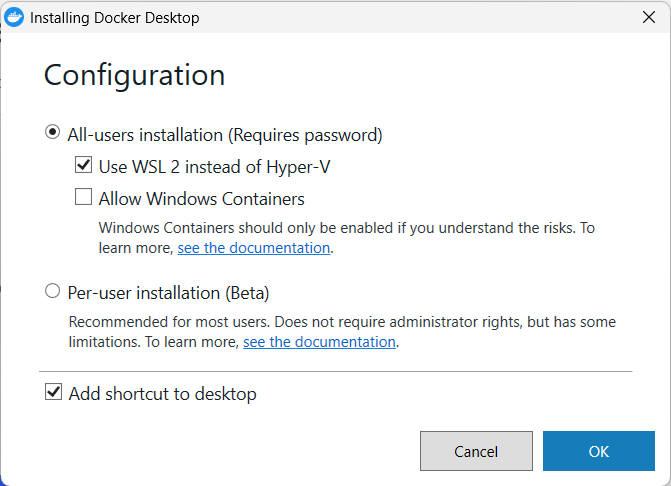
Clique em “OK” e aguarde até concluir a instalação;
Caso ocorra algum problema, repita as etapas anteriores, mas se finalizar, uma janela de instalação concluída irá ser exibida, clique no botão “Close and Restart” para reiniciar o computador;
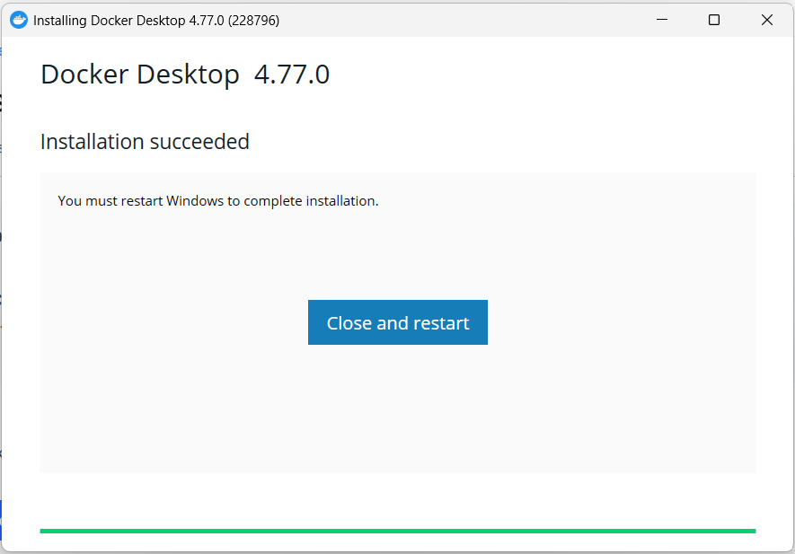
- Após o computador ligar, o Docker irá iniciar com a tela de aceitação dos termos. Recomendo que leia os termos e, em seguida, clique no botão “Accept”;
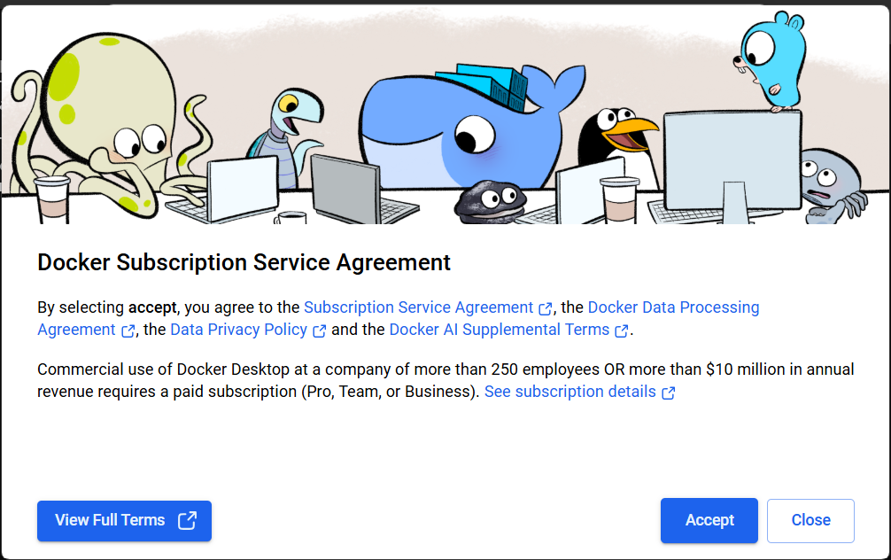
- Caso tudo ocorrer bem, e ao pesquisar no Windows por “Docker”, terá abertura do sistema uma tela semelhante a da figura 4, mas sem conteúdo inicialmente.
Ao clicar no canto superior em “Sign Up”, é recomendado efetuar seu cadastro, ao clicar em uma destas opções disponíveis e-mail (Create an account), Google ou GitHub:
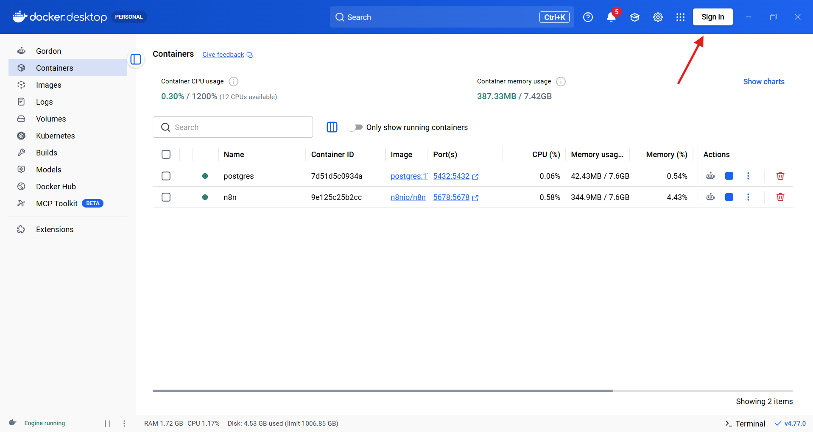
2° Passo: Criar a Credencial GEMINI
Para criar essa nova Credencial (Chave de API) de modelo no GEMINI gratuitamente, segue os passos:
- Acesse a plataforma: Entre no site do Google AI Studio, através do link: https://aistudio.google.com utilizando a sua conta regular do Google (Gmail);
- Inicie a criação: No menu lateral esquerdo ou no topo da tela, clique no botão “Get API key” (Obter chave de API);
- Selecione o projeto: Clique no botão azul escrito “Create API key” (Criar chave de API);
- Defina a origem: Escolha a opção “Create API key in a new project” (Criar chave de API em um novo projeto). Isso garante que a credencial seja gerada no plano gratuito e sem nenhum vínculo com faturamento;
- Copie o código: Uma janela abrirá exibindo a sua chave (uma longa sequência de letras e números). Clique em “Copy” (Copiar) e salve-a em um local seguro para uso posterior neste laboratório, por exemplo, arquivo txt ou e-mail;
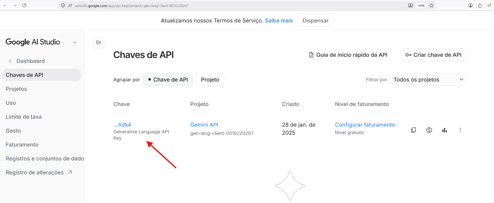
3° Passo: Preparação do ambiente com n8n e Postgresql
Para instalar o n8n e Postgresql
Apague PostgreSQL e n8n, a seguir comandos completos para usar dentro do PowerShell do Windows para evitar que haja versões pendentes.
Criar a rede Docker com o seguinte comando dentro do PowerShell do Windows, basta localizar PowerShell e selecionar como administrador:
docker network create n8n-network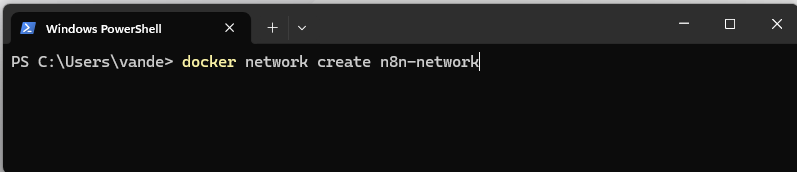
Subir PostgreSQL com o seguinte comando dentro do PowerShell:
docker run --name postgres `
--network n8n-network `
-e POSTGRES_DB=n8n `
-e POSTGRES_USER=n8n `
-e POSTGRES_PASSWORD=n8n123 `
-v postgres_data:/var/lib/postgresql/data `
-p 5432:5432 `
-d postgres:17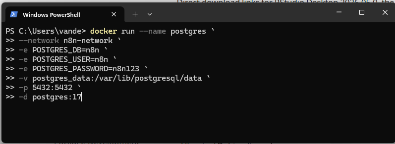
Subir n8n com o seguinte comando dentro do PowerShell:
docker run --name n8n `
--network n8n-network `
-e DB_TYPE=postgresdb `
-e DB_POSTGRESDB_HOST=postgres `
-e DB_POSTGRESDB_DATABASE=n8n `
-e DB_POSTGRESDB_USER=n8n `
-e DB_POSTGRESDB_PASSWORD=n8n123 `
-v n8n_data:/home/node/.n8n `
-p 5678:5678 `
-d n8nio/n8n
Avisos Críticos
Caso seja necessário apagar PostgreSQL e n8n novamente, a seguir comandos completos para usar dentro do PowerShell do Windows.
docker stop postgres n8n; `
docker rm -f postgres n8n; `
docker volume rm postgres_data n8n_data; `
docker network rm n8n-network; `
docker rmi -f postgres:17 n8nio/n8nAcessar o n8n pelo seu navegador de internet de preferência (Google Chrome, Mozilla Firefox ou Microsoft Edge), atravês do link:
http://localhost:5678Faça então seu login para acessar a ferramenta n8n, informando o e-mail, nome, sobrenome e senha, podendo se a mesma utilizada no Docker.
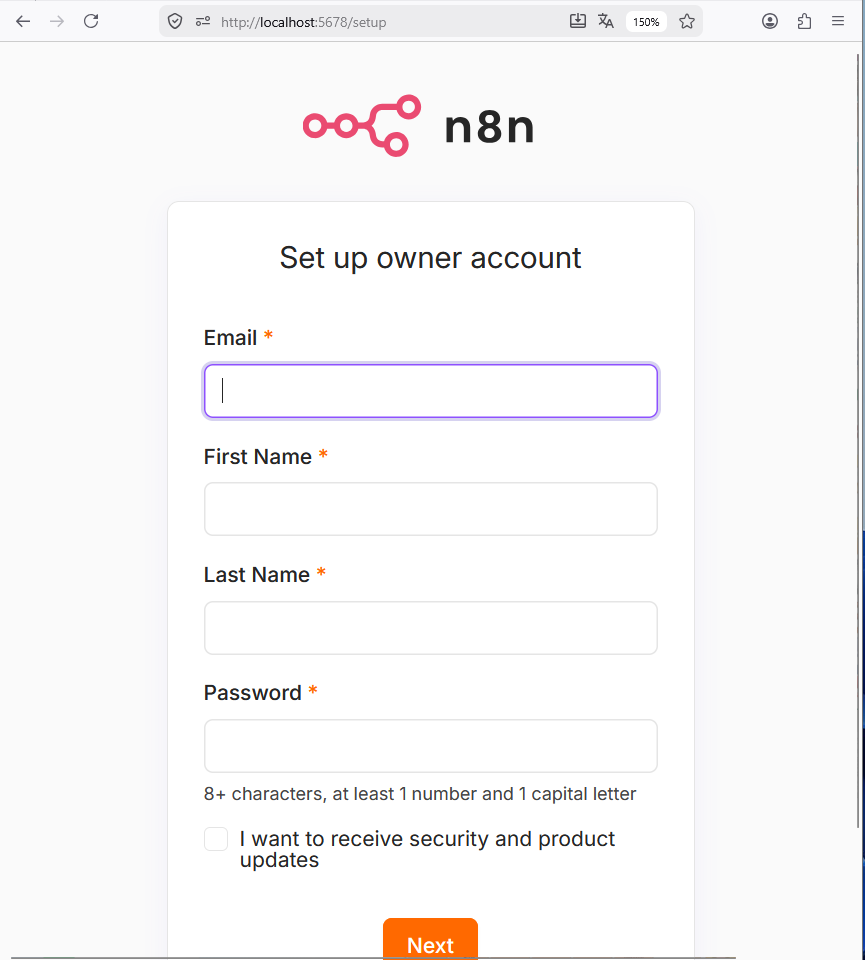
Clicar no botão “Get started” mesmo sem o preenchimento do formulário.
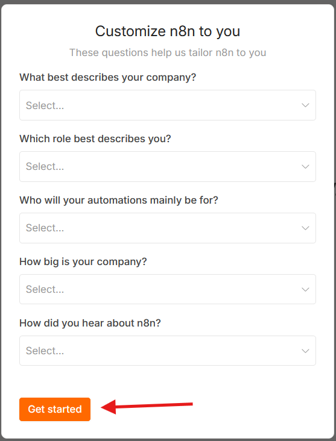
Clica em seguida em “Skip” para acessar o ambiente de desenvolvimento do N8N
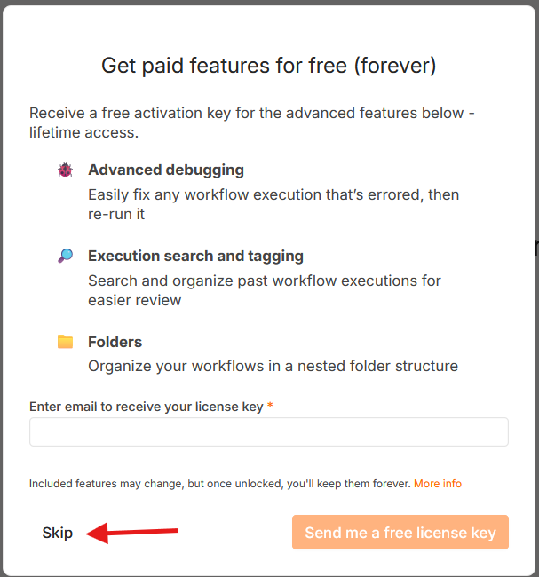
Clica em seguida em “Build a workflow” para começar a criar o fluxo agêntico desse laboratório no n8n
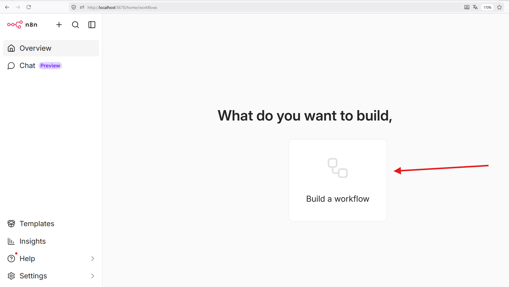
4° Passo: Començando o Desenvolvimento dentro do ambiente com n8n
Este laboratório começa na opção “Build a workflow”, onde será criado o fluxo agêntico no n8n. Clique no botão “+” para abrir o painel de seleção de gatilhos (Triggers) e nós (Nodes). Em seguida, altere o nome padrão “My workflow”, localizado na barra superior, para “My workflow CAPES”. Após isso, selecione o gatilho “Manual Trigger” e arraste-o para a área do Editor, dando início à construção do fluxo agêntico deste laboratório.
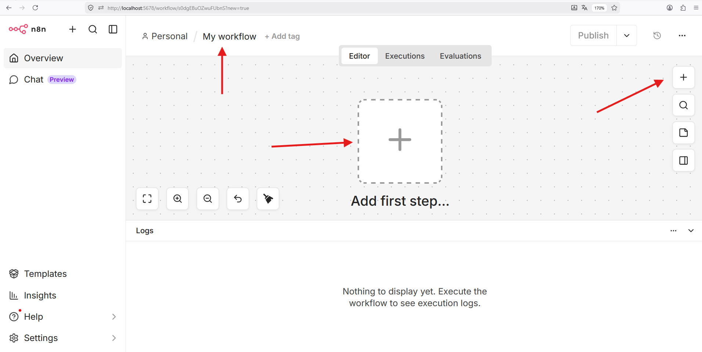
No ícone “+” conectado ao gatilho, clique para adicionar um novo nó ao fluxo. Em seguida, pesquise por “HTTP Request”, selecione-o e insira-o no workflow.
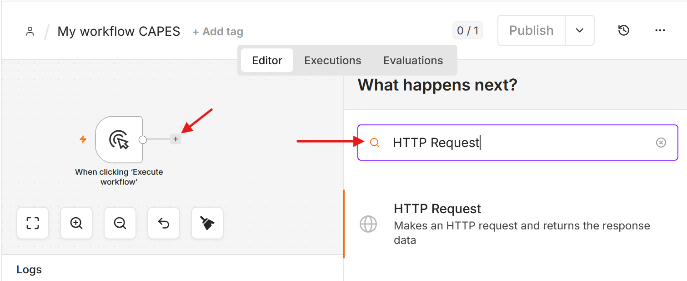
Será exibido o formulário de configuração do nó HTTP Request. Mantenha o método GET selecionado e, no campo URL, informe o endereço:
https://www.gov.br/capes/pt-br/assuntos/editais-e-resultados-capesApós preencher os parâmetros, clique no ícone “X” localizado no canto superior esquerdo da janela para fechar o painel de configuração e retornar ao Editor do workflow.
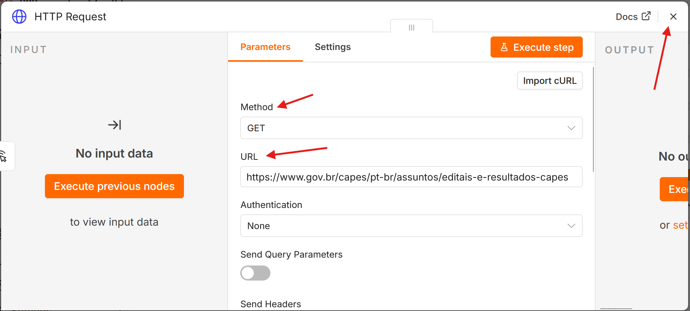
Em seguida, adicione um novo nó ao fluxo. Para isso, clique no ícone “+”, pesquise por “AI Agent” na lista de nós disponíveis e selecione-o. Ao clicar sobre o item AI Agent, será aberto o painel de configuração, onde os parâmetros necessários poderão ser definidos para o funcionamento do agente de IA.
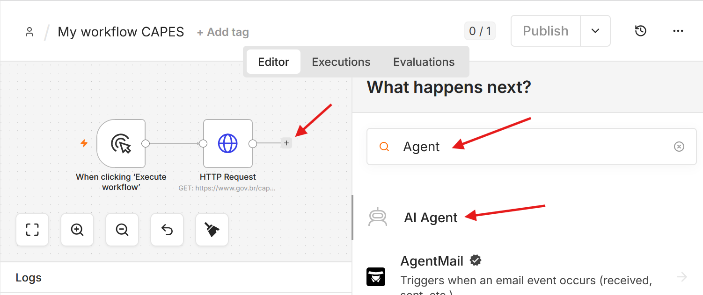
Ao abrir o formulário de configuração do nó AI Agent, é possível observar três áreas principais. À esquerda encontra-se a seção INPUT, que exibe os dados recebidos do nó anterior. Na região central estão as configurações do agente, onde são definidos os parâmetros e instruções de processamento. À direita está a seção OUTPUT, responsável por apresentar o resultado gerado após a execução do nó.
Para facilitar a identificação do agente no workflow, altere o nome padrão do nó para “Agente IA Analista CAPES”, utilizando o campo localizado no canto superior direito da janela.
Vale destacar a presença da expressão {{ $json.data }}, que corresponde a uma variável dinâmica do n8n. Durante a execução do workflow, essa expressão será substituída automaticamente pelos dados recebidos na entrada (INPUT) do nó, permitindo que o agente de IA analise o conteúdo processado na etapa anterior.
Em seguida, no parâmetro “Source for Prompt (User Message)”, selecione a opção “Define below”. No campo “Prompt (User Message)”, insira o conteúdo indicado a seguir.
Você é um especialista em análise de editais da CAPES.
Sua tarefa é analisar o conteúdo fornecido {{ $json.data }} e identificar todos os links relacionados aos programas ou editais mencionados.
Regras obrigatórias:
1. Extraia apenas os programas ou editais explicitamente informados no documento.
Formato obrigatório da resposta:
Programa/Edital
2. Traga também alguma informação extrar relevante relacionada a cada programa ou edital informados no documento.
Não inclua comentários, explicações, análises ou textos adicionais. Retorne apenas a tabela.
3. Se possível calcule o número total de programas e editais.Por fim, clique no ícone “+” associado ao campo “Chat Model*”, localizado na parte inferior do nó “Agente IA Analista CAPES”. Essa ação permitirá adicionar e configurar o modelo de linguagem que será utilizado pelo agente para processar as informações e gerar as análises solicitadas.
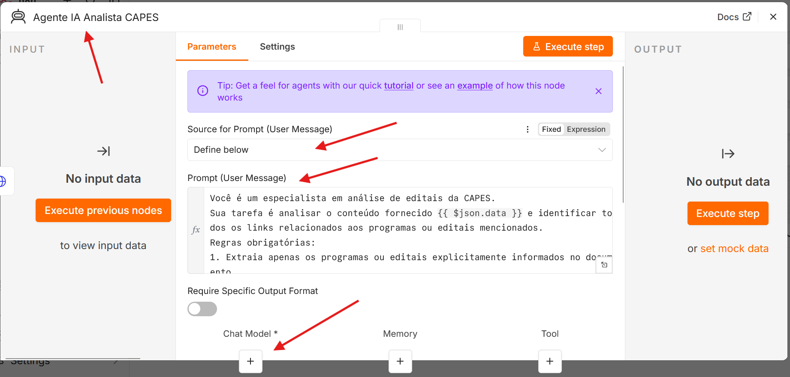
O próximo passo consiste em definir o modelo de linguagem que será utilizado pelo agente neste laboratório. Para isso, pesquise por “Google Gemini Chat Model” na lista de modelos disponíveis e clique sobre ele para adicioná-lo ao workflow. Em seguida, será exibido o formulário de configuração, onde deverão ser informados os parâmetros necessários para a conexão e utilização do modelo.
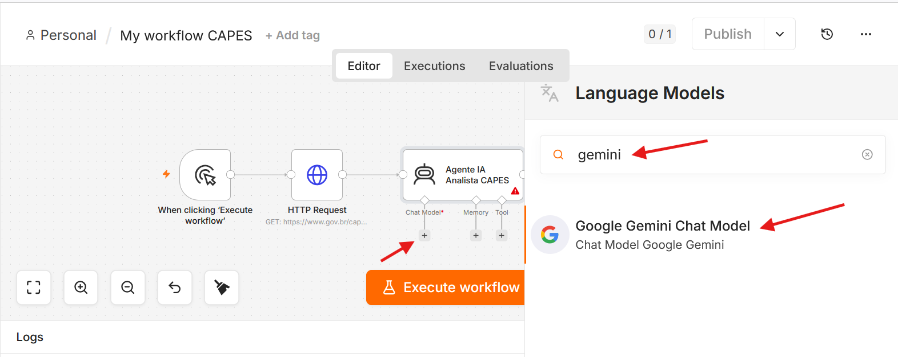
Agora é necessário definir o modelo de linguagem que será utilizado neste laboratório. Para isso, localize a opção “Google Gemini Chat Model” na lista de modelos disponíveis e clique sobre ela para adicioná-la ao workflow. Em seguida, será aberto o formulário de configuração, no qual deverão ser informados os parâmetros necessários para o funcionamento do modelo.
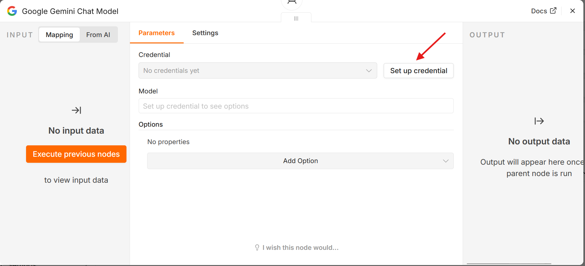
Agora configure a conexão com a API do Gemini. No campo Host, mantenha o valor padrão apresentado pelo n8n. Em seguida, informe no campo API Key a chave de acesso gerada no Passo 2 deste laboratório. Após preencher os dados, clique no botão “Save” para salvar a configuração.
Se as informações estiverem corretas, o n8n realizará um teste automático e exibirá uma mensagem indicando que a conexão foi estabelecida com sucesso. Finalizada a configuração, feche a janela clicando no ícone “X”, localizado no canto superior da tela de configuração da conta da API Gemini.
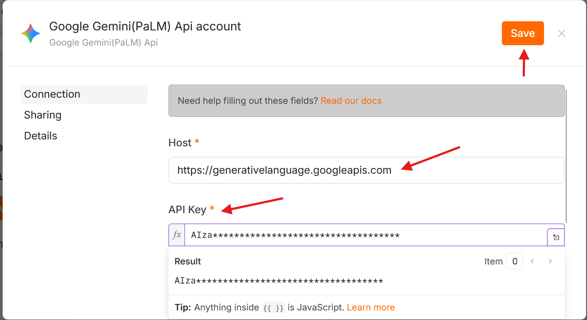
Ao retornar ao formulário de configuração do nó Agente IA Analista CAPES, é necessário definir o modelo de linguagem que será utilizado neste laboratório. No campo Model, selecione a opção “models/gemini-2.5-flash-lite”, que será responsável pelo processamento das informações e pela geração das análises realizadas pelo agente.
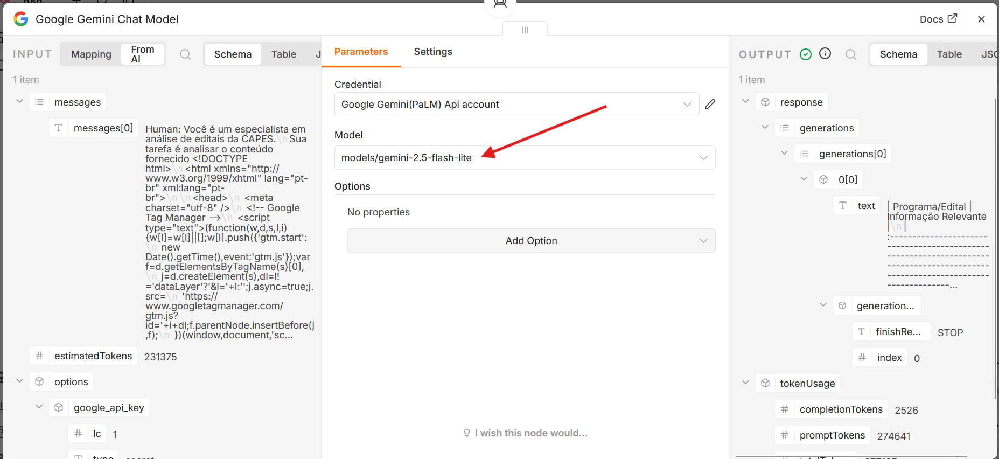
O próximo passo consiste em adicionar memória ao agente de IA, permitindo que ele mantenha o contexto das interações ao longo da execução. Para isso, clique no ícone “+” associado ao campo “Memory”. Será aberta a lista de opções disponíveis; localize e selecione “Postgres Chat Memory”, conforme ilustrado na imagem a seguir.
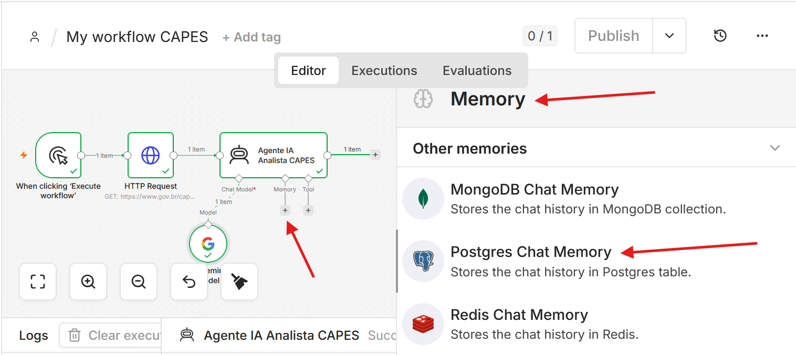
Após localizar o componente, clique em “Postgres Chat Memory” para abrir o formulário de configuração dos parâmetros. No campo “Session ID”, altere a opção para “Define below”. Em seguida, no campo “Key”, informe a expressão:
{{ $workflow.id }}Essa configuração permitirá identificar de forma única a sessão associada ao workflow e ao agente de IA.
No parâmetro “Context Window Length”, defina o valor 5, indicando que as cinco interações mais recentes serão mantidas no contexto da conversa.
Por fim, clique no ícone de edição (representado por um lápis), localizado no canto superior direito da janela, para configurar a conexão e as credenciais de acesso ao banco de dados PostgreSQL executado no ambiente Docker.
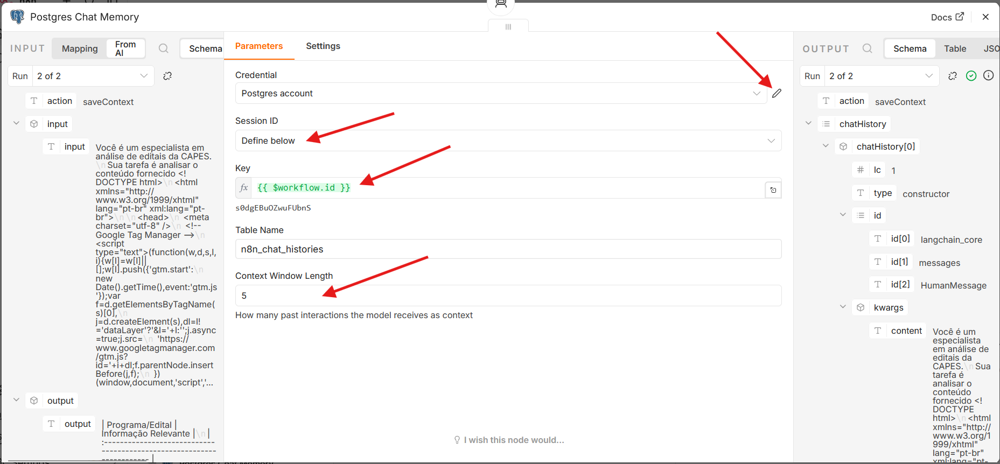
Ao clicar no ícone de edição das credenciais, será exibido o formulário de configuração da conexão com o PostgreSQL. Preencha os campos com os seguintes valores:
- Host: host.docker.internal
- Database: n8n
- User: n8n
- Password: n8n123
A senha apresentada é utilizada apenas como exemplo para fins de teste e aprendizado. Em ambientes de produção, recomenda-se a utilização de uma senha forte, contendo letras maiúsculas e minúsculas, números e caracteres especiais, de forma a garantir maior segurança ao banco de dados.
Após preencher os dados, salve a configuração e verifique se o teste de conexão é concluído com sucesso.
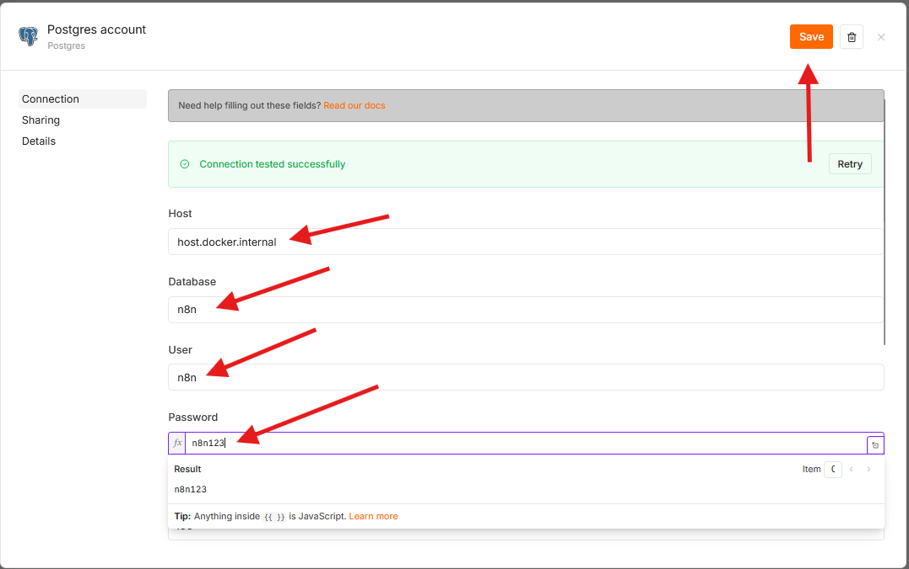
O próximo passo é adicionar uma ferramenta ao agente de IA para ampliar suas capacidades de processamento. Para isso, clique no ícone “+” associado ao campo “Tool”. Será exibida a lista de ferramentas disponíveis; localize e selecione “Calculator”, conforme ilustrado na imagem.
Essa ferramenta permitirá que o agente realize operações matemáticas e cálculos durante a execução do workflow, sendo especialmente útil para atender às instruções e análises descritas no prompt configurado anteriormente.
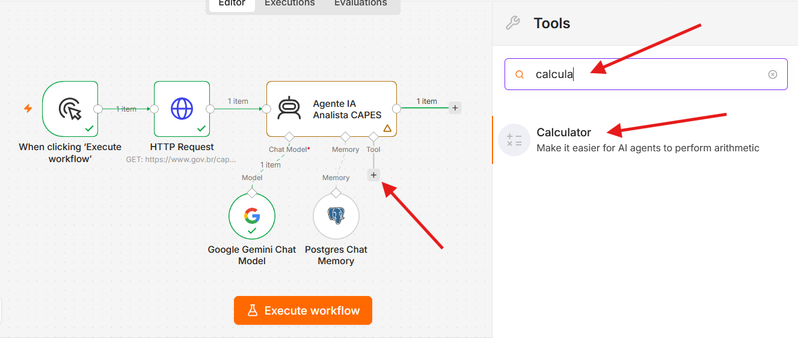
Em seguida, adicione um novo nó ao fluxo conectado ao nó Agente IA Analista CAPES. Para isso, clique no ícone “+” localizado após o agente, pesquise por “AI Agent” na lista de componentes disponíveis e selecione-o. Ao clicar sobre o item AI Agent, o painel de configuração será aberto, permitindo a definição dos parâmetros e instruções que serão utilizados por este novo agente no workflow.
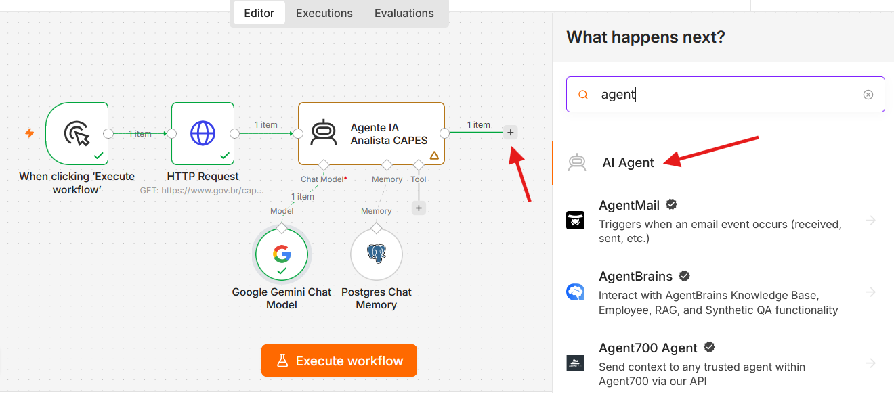
Ao abrir o formulário de configuração do novo AI Agent, é possível identificar três áreas principais da interface. À esquerda encontra-se a seção INPUT, responsável por exibir os dados recebidos do nó anterior. Na região central estão as configurações do agente, onde são definidos os parâmetros e instruções de processamento. À direita está a seção OUTPUT, que apresentará o resultado gerado após a execução desta etapa do workflow.
Para facilitar a identificação da função deste agente, altere o nome do nó para “Agente IA Relatório Gerencial CAPES”, utilizando o campo localizado no canto superior direito da janela. O objetivo deste agente é transformar as análises produzidas pelo agente anterior em um relatório gerencial estruturado, com linguagem adequada para apoiar a tomada de decisão por gestores e coordenadores.
Observe a utilização da expressão {{ $json.data }}, uma variável dinâmica do n8n que será substituída automaticamente, durante a execução do workflow, pelos dados recebidos na entrada (INPUT) do nó. Dessa forma, o agente terá acesso ao conteúdo produzido na etapa anterior e poderá utilizá-lo como base para elaborar o relatório gerencial solicitado.
Em seguida, no parâmetro “Source for Prompt (User Message)”, selecione a opção “Define below”. No campo “Prompt (User Message)”, insira o conteúdo apresentado a seguir.
Você é um especialista em elaboração de relatórios executivos e documentos institucionais para alta gestão.
Com base exclusivamente no conteúdo de entrada fornecido {{ $json.output }}, elabore um Relatório Gerencial no formato de Ofício, utilizando linguagem formal, objetiva, técnica e adequada ao ambiente institucional.
Regras obrigatórias:
1. Utilize apenas as informações presentes no conteúdo analisado.
2. Não invente informações, números, datas, indicadores ou conclusões.
3. Destaque os principais resultados, evidências, oportunidades, riscos e recomendações identificados.
4. Organize o texto de forma clara e estruturada para facilitar a tomada de decisão pela alta gestão.
5. Sempre que houver dados quantitativos, apresente-os de forma resumida e objetiva.
6. Caso existam inconsistências ou ausência de informações relevantes, registre essa observação no relatório.
7. Mantenha foco estratégico, evitando detalhes excessivamente operacionais.
8. Produza um texto com qualidade equivalente a um documento institucional oficial.
Estrutura obrigatória:
OFÍCIO Nº [gerar automaticamente] com ano atual {{ $today }}.
Assunto: Relatório Gerencial
1. Contextualização
* Apresentação resumida do tema analisado.
2. Principais Achados
* Principais informações identificadas.
* Resultados relevantes.
* Indicadores ou evidências encontradas.
* Traga a lista dos programas em ordem alfabética e com numeração.
3. Análise Gerencial
* Impactos institucionais.
* Oportunidades identificadas.
* Riscos ou pontos de atenção.
4. Recomendações
* Sugestões de ações para a gestão.
* Encaminhamentos propostos.
5. Considerações Finais
* Síntese executiva para apoio à tomada de decisão.
6. Calcule o total de itens de programas fornecidos e traga o total em considerações finais.
O relatório deve ser redigido em formato de ofício institucional, pronto para encaminhamento à alta administração.Para finalizar a configuração do agente, é necessário definir o modelo de linguagem que será utilizado para processar as informações e gerar o relatório gerencial. Clique no ícone “+” associado ao campo “Chat Model*”, localizado na parte inferior do nó Agente IA Relatório Gerencial CAPES. Em seguida, selecione o modelo desejado para estabelecer a conexão entre o agente e a inteligência artificial responsável pela geração das respostas.
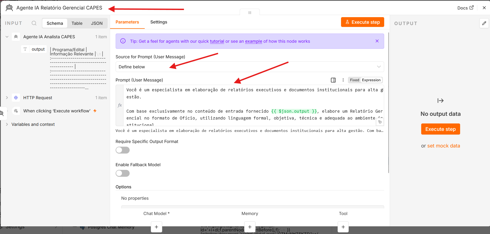
O próximo passo é adicionar um mecanismo de memória ao agente de IA, permitindo que ele mantenha o contexto das interações e utilize informações de etapas anteriores durante o processamento. Para isso, clique no ícone “+” associado ao campo “Memory”. Será exibida uma lista de opções disponíveis; localize e selecione “Postgres Chat Memory”, conforme ilustrado na imagem a seguir.
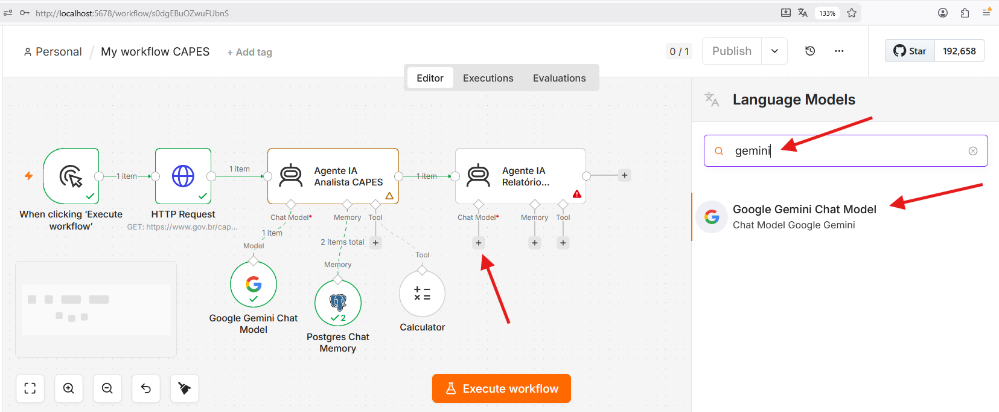
Agora é necessário definir o modelo de linguagem que será utilizado por este agente. Para isso, localize a opção “Google Gemini Chat Model” na lista de componentes disponíveis e clique sobre ela para adicioná-la ao workflow. Em seguida, será exibido o formulário de configuração dos parâmetros do modelo.
Nesta etapa, utilize a mesma credencial da API Gemini configurada anteriormente para o Agente IA Analista CAPES, evitando a criação de uma nova conexão. No campo Model, selecione o mesmo modelo já utilizado anteriormente, models/gemini-2.5-flash, garantindo consistência no processamento e na geração das respostas entre os agentes do fluxo.
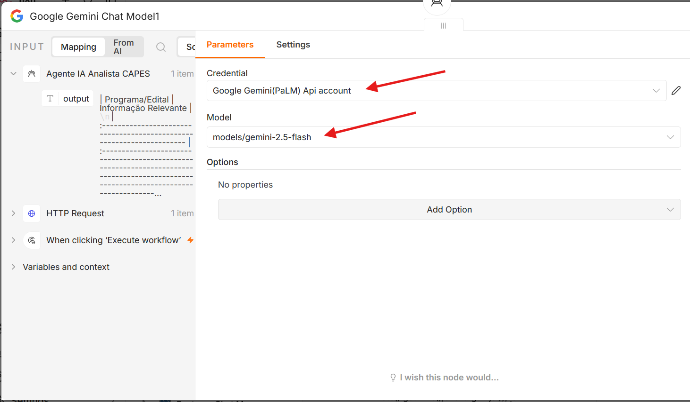
O próximo passo consiste em adicionar um componente de memória ao agente de IA. Para isso, clique no ícone “+” localizado ao lado do campo “Memory”. Será exibida uma lista com as opções de memória disponíveis; localize e selecione “Postgres Chat Memory”, conforme ilustrado na imagem.
A utilização desse componente permitirá que o agente mantenha o contexto das interações, armazenando e recuperando informações relevantes no banco de dados PostgreSQL ao longo da execução do workflow.
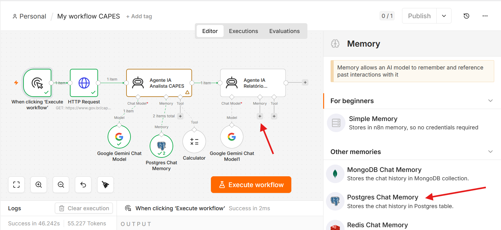
Após selecionar a opção “Postgres Chat Memory”, clique sobre o componente para abrir o formulário de configuração dos parâmetros. No campo “Session ID”, altere a configuração para “Define below”. Em seguida, no campo “Key”, informe a expressão:
{{ $workflow.id }}Essa variável dinâmica utilizará o identificador do workflow para associar corretamente o histórico de conversas à sessão do agente de IA.
No parâmetro “Context Window Length”, defina o valor 5, indicando que as cinco interações mais recentes serão mantidas no contexto enviado ao modelo de linguagem.
Por fim, clique no ícone de edição (representado por um lápis), localizado no canto superior direito da janela, para configurar ou selecionar as credenciais de acesso ao banco PostgreSQL executado no ambiente Docker. Essa conexão será responsável pelo armazenamento persistente da memória do agente.
Ao clicar no ícone de edição das credenciais, será exibido o formulário de configuração da conexão com o PostgreSQL. Preencha os campos com os seguintes valores:
- Host: host.docker.internal
- Database: n8n
- User: n8n
- Password: n8n123
Após informar os dados, clique em Save para salvar a credencial e validar a conexão com o banco de dados.
Importante: a senha n8n123 está sendo utilizada apenas para fins didáticos neste laboratório. Em ambientes de homologação ou produção, recomenda-se a utilização de senhas fortes e exclusivas, compostas por letras maiúsculas e minúsculas, números e caracteres especiais, seguindo as boas práticas de segurança da informação.
O próximo passo é adicionar uma ferramenta ao nó “Agente IA Relatório Gerencial CAPES” para ampliar suas capacidades de processamento e efetuar a contagem dos programas ou editais. Para isso, clique no ícone “+” associado ao campo “Tool”. Será exibida a lista de ferramentas disponíveis; localize e selecione “Calculator”, conforme ilustrado na imagem.
A ferramenta Calculator permitirá que o agente execute operações matemáticas e realize cálculos de forma precisa, sempre que necessário para atender às instruções definidas no prompt e enriquecer as análises apresentadas no relatório gerencial.
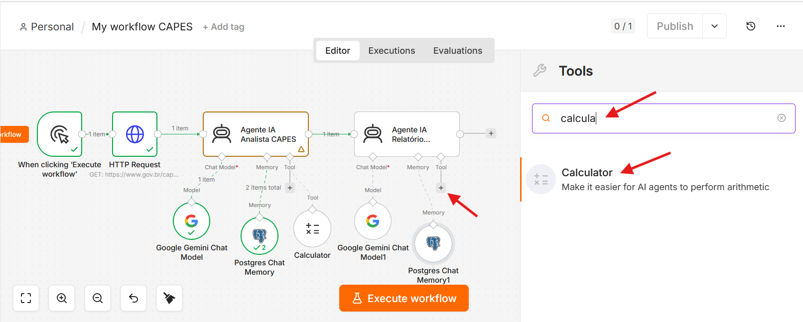
Em seguida, adicionaremos um novo componente ao nó “Agente IA Relatório Gerencial CAPES”. Para isso, clique no ícone “+” conectado ao agente. Será aberta a janela de seleção de componentes; pesquise por “Convert to File” e selecione essa opção para adicioná-la ao workflow.
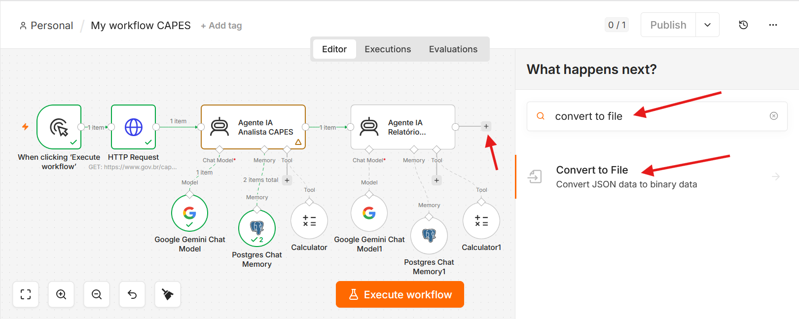
Após localizar o componente “Convert to File”, clique sobre ele para adicioná-lo ao workflow. Em seguida, na aba “Action”, selecione a opção “Convert to HTML”, que será utilizada para transformar o conteúdo gerado pelo agente em um arquivo no formato HTML.
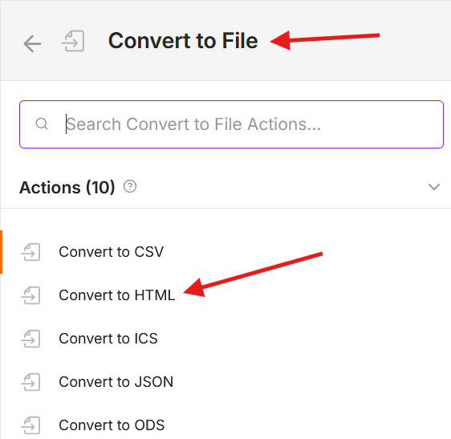
Agora configure os parâmetros do nó “Convert to File”. Mantenha o campo “Put Output File in Field” com o valor “data”, que será utilizado para armazenar o arquivo gerado na saída do nó.
Em seguida, na seção “Options”, preencha o campo “File Name” com o nome:
Relatorio_Gerencial_CAPES.htmlEsse será o nome do arquivo HTML gerado ao final do processamento.
Após concluir a configuração, clique no ícone “X” localizado no canto superior da janela para fechar o painel de configuração e retornar à área de edição do workflow, onde será possível dar continuidade à construção do fluxo.
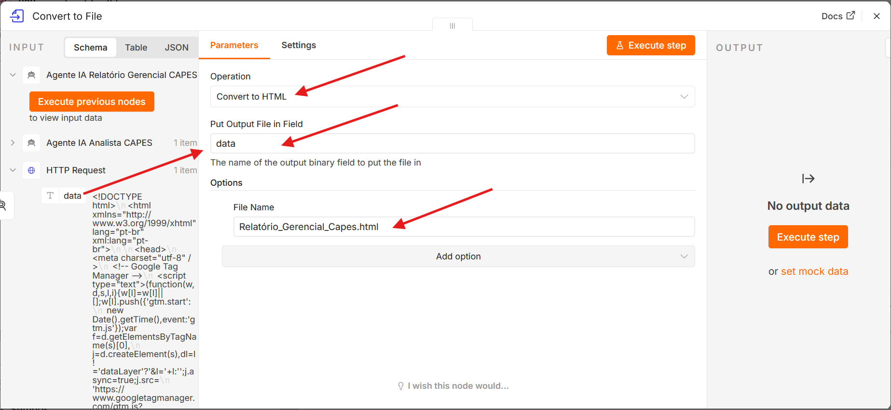
Após concluir todas as etapas de configuração, clique no botão “Execute Workflow” para iniciar a execução completa do fluxo. O processamento será iniciado a partir do gatilho “Manual Trigger” e seguirá sequencialmente por todos os nós configurados, incluindo as requisições HTTP, os agentes de IA, os componentes de memória e as ferramentas auxiliares.
Ao final da execução, o nó “Convert to File” será responsável por gerar o arquivo HTML contendo o relatório gerencial elaborado pelos agentes de IA, concluindo assim o processamento automatizado do workflow.
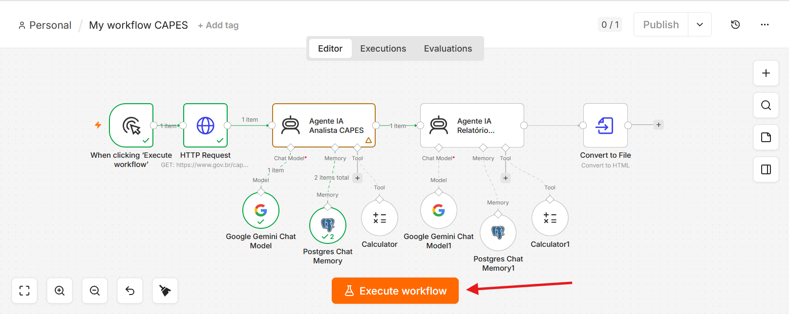
Cuidado e Atenção
Caso ocorrer mensagens de erro: “The service is receiving too many requests from you”, significa que O Google limita a quantidade de tokens de entrada por minuto, pois está está no Free Tier (camada gratuita), provavelmente o workflow enviou mais de 250.000 tokens de entrada em menos de 1 minuto, a API bloqueou, portanto, precisa alternar entre os modelos disponíveis do Gemini e executar novamente o workflow.
Concluído o processamento, espera-se que o n8n exiba a mensagem “Workflow executed successfully”, confirmando a execução bem-sucedida de todas as etapas do fluxo e a geração correta dos artefatos definidos no workflow.
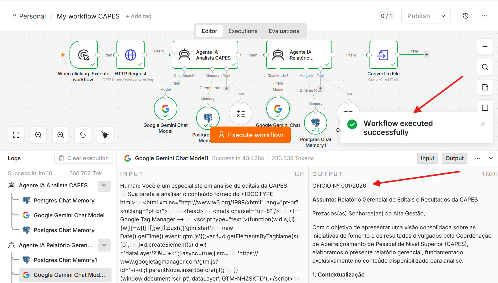
Ao clicar em download do nó “Convert to File” é possível extrair localmente o arquivo.
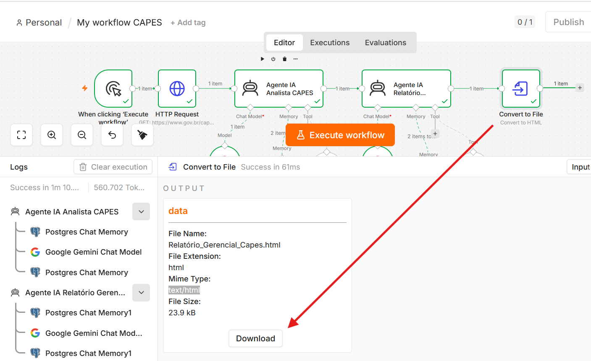
A seguir a imagem do arquivo “Relatório_Gerencial_Capes.html”, ponto para ser enviado para gestão como o resultado final do workflow gerado pelo n8n.
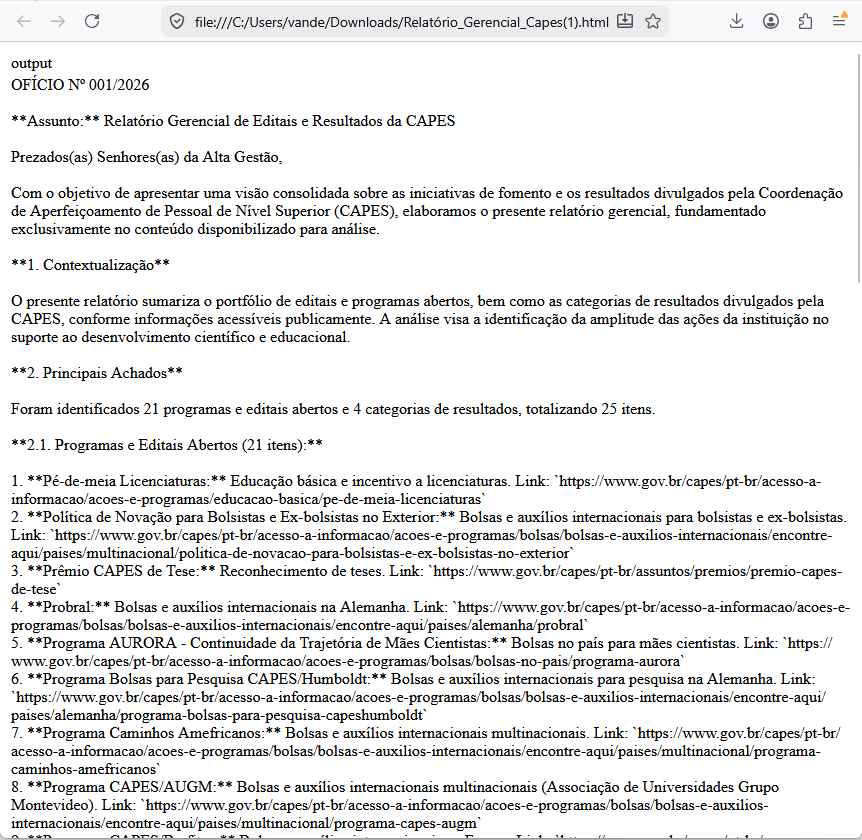
Para fins de organização e reutilização futura, recomenda-se realizar o download do workflow após a sua conclusão. Dessa forma, será possível armazenar uma cópia do fluxo e importá-la novamente sempre que necessário.
Para efetuar o download, clique no menu de opções representado pelos três pontos (…), localizado no canto superior da interface, e selecione a opção “Download”. O n8n exportará o workflow em um arquivo que poderá ser armazenado como backup ou compartilhado com outros usuários.
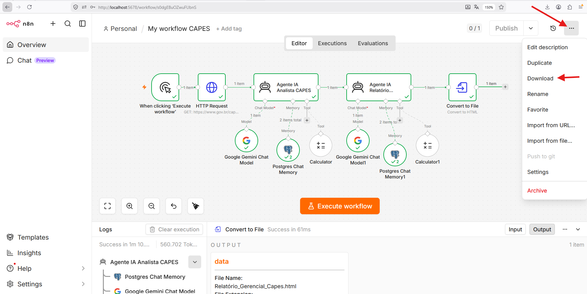
Resultados Esperados após execução do fluxo dentro do n8n
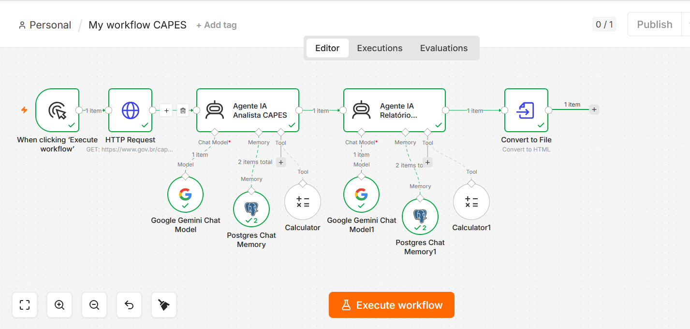
Dicas Práticas e Atalhos
Exite a possibilidade em adicionar junto ao nó “Agente IA Relatório”, um nó para GMAIL, selecionando e configurando “Send a message” para envio automatizado para Gestão, mas isso é indicado quando há amadurecimento das informações geradas pelo workflow, que necessariamente já estariam revisadas ou homologadas por revisão humana.
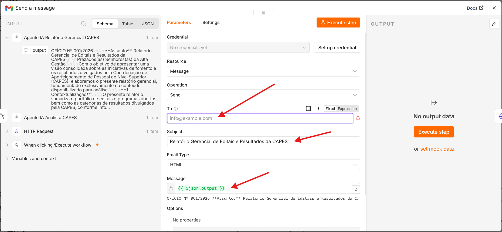
📂 Download das planilhas
Para consultar a saída provável para o Relatório Gerencial CAPES gerados, você pode fazer o download direto dos arquivos de exemplo através do repositório oficial do projeto:
📂 Download do Código Fonte do Sexto Laboratório
Para consultar o código fonte, você pode fazer o download direto do arquivo de exemplo através do repositório oficial do projeto, será necessário reconfiguração da chave de API para reativar acesso ao modelo de LLM. Para abrir, basta localizar os três pontos (…), localizado no canto superior da interface do n8n, e selecione a opção “Import from file…”.